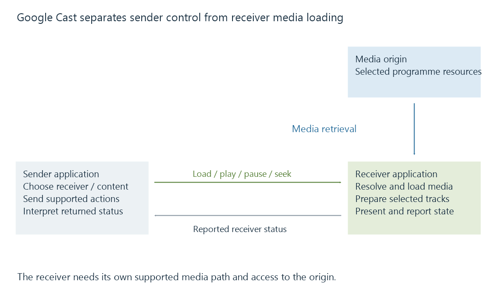

Google Cast and receiver-side media playback
Google Cast connects a sender application to a receiver application that manages the selected media presentation and its resource-loading path.
Google Cast connects a sender app to a receiver app. The sender manages the user's interaction; the receiver manages presentation on the receiving device.
For media casting, the receiver's playback path is the one that needs to obtain and use the selected programme resources. Emby's Chromecast documentation describes its casting integration.
The receiver's load sequence
A sender initiates or joins a Cast session and supplies a media load request through the supported application integration. A receiver can interpret or customize that request before its player loads the media.
The receiver then retrieves the relevant resource, prepares its media path and reports playback status. Sender commands can request play, pause, seek and other supported behavior.

A content identifier in a load request need not be the final direct resource URL. A custom receiver can resolve or alter the request under its own integration. Google's Web Receiver message-interception API is one documented mechanism for that behavior.
Device and application capabilities both matter
Google's media documentation separates container support, encoded-media configurations and device-specific limits. It also distinguishes facilities that need additional receiver integration.
One concrete example is its published device list: third-generation Chromecast's stated H.264 path goes up to 1080p60, while Google TV Streamer lists additional video configurations including AV1. Those entries should not be flattened into “all Chromecast devices support the same formats.”
| Context | Requirement to establish |
|---|---|
| Receiver model | Relevant decoding and output capabilities |
| Receiver application | Supported delivery, tracks and playback integration |
| Selected source | Actual codec configuration and packaging |
| Audio/subtitle choice | Additional selected media requirements |
| Origin access | Receiver can obtain the needed resources |
The sender's successful local playback establishes a different media path. Emby Server may supply an adapted representation for the receiver even when the phone played the original.
Resource access belongs to the receiver
The receiver must reach the addresses it uses. A server-local file path or a phone-only address is not automatically meaningful there.
A Web Receiver also has the relevant web loading context. For script-managed delivery, cross-origin behavior can affect its requests. A phone's authenticated fetch does not prove that a separate receiver request has the same access state.
Seeing the device in a Cast chooser establishes discovery. Successfully connecting a session establishes additional control communication. Neither observation, by itself, proves media-resource retrieval.
Relate status to actual presentation
| Observation | Evidence supplied |
|---|---|
| Receiver appears in the chooser | Discovery under the current environment |
| Receiver application starts | Session/application activation |
| Load request is handled | Receiver accepted that request stage |
| Media bytes are obtained | Retrieval succeeded for those resources |
| Playback status advances | Receiver reports progress in its playback context |
See Also
- Casting and screen mirroring: where playback happens
- Controller and receiver connectivity
- What determines playback compatibility?
- Browser media playback and its loading paths
- Playback remote control and reported session state